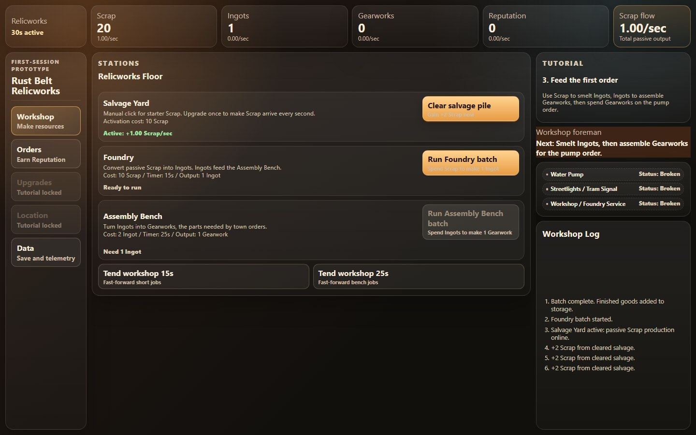
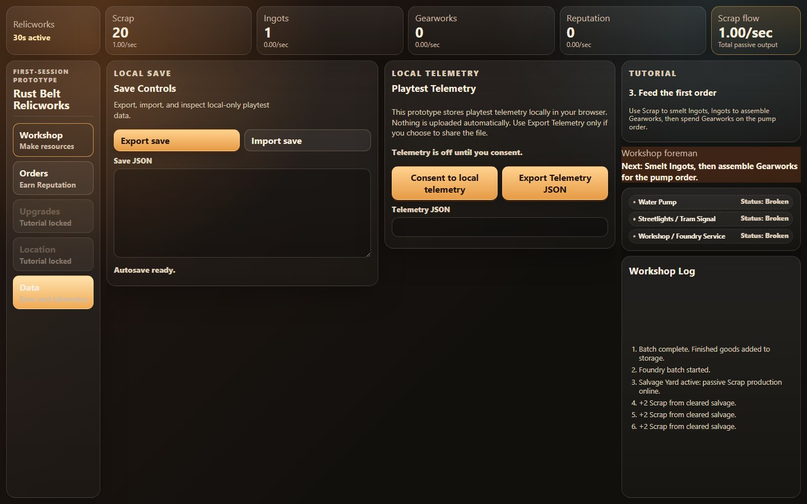

A small workshop with a growing resource loop.
A browser idle-game prototype about turning scrap into useful parts and restoring a workshop’s surrounding community.
- My role
- Personal prototype
- Project year
- 2026
- Evidence
- Runtime evidence
- Built with
- Svelte 5 · TypeScript · Vite · Vitest · Playwright

Why build it?
An incremental game has to make progression understandable while keeping resources, timers, and saved state consistent. The first session is where that loop must prove itself.
What I built.
I built the first-session workshop loop with typed state, resource actions, timed production, tutorials, versioned local saves, capped offline resume, and consent-gated local telemetry export.
How it works.
- 1
Start with manual work
Earn scrap and activate passive production.
- 2
Convert resources
Spend scrap on foundry batches, then turn ingots into gearworks.
- 3
Restore and persist
Progress through civic orders and preserve the workshop in a local save.
Look at the work.
Fresh recording of the running Svelte application: manual collection, passive activation, and a completed foundry batch. The prototype’s own “Tend workshop” controls advance time in the video.

Decisions & tradeoffs.
Open each note for the implementation boundary, tradeoff, and next engineering question.
01Simulation owns the resource rules
Typed actions and simulation functions govern spending, production, and progression. Svelte presents the resulting state. Timer and resource behavior can be checked independently of a particular layout.
02Offline progress needs a bounded contract
Versioned localStorage saves support resumption, while capped elapsed time limits offline simulation. Local saves are convenient but can be edited or cleared. Schema migration, corrupt-save recovery, and clock changes deserve explicit tests.
src/lib/game/actions.ts · src/lib/game/simulation.ts · src/lib/save · src/lib/telemetry
What this demonstrates.
Private first-session validation prototype, not a shipped game. This capture does not establish long-term balance, retention, or a complete content progression.
Explore the implementation
Source is local, private, or archived; no public repository link is available.
Screenshots and output are evidence of the stated demonstration, not a claim that every feature or failure mode was tested.
Interested in the thinking behind it?
I’m happy to discuss the implementation, its limitations, and how I would develop it further.